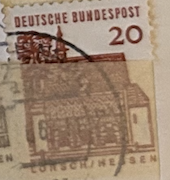
| SOURCE | TITLE| IMAGE MATCH | click to source page |
| www.ebay.com | Deutsche Bundespost Foreign 20c Stamp Used - #A346 | eBay | 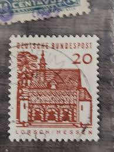 |
| www.ebay.com | Germany - Berlin 1965 Wall Pavilion Tete-beche Pair Mint MNH ... | 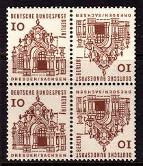 |
| www.etsy.com | Stamp Art, Lorsch/hessen, 20 Marks, DDR, Used Stamps - Etsy | 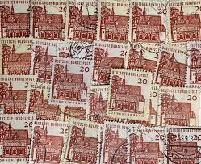 |
| www.istockphoto.com | Old German Post Stamps Stock Photo - Download Image Now ... | 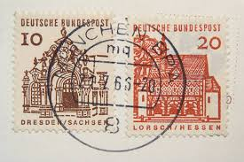 |
| www.ebay.com | Stamp Europe Germany 1964-66 Deutche Bunderpost | eBay | 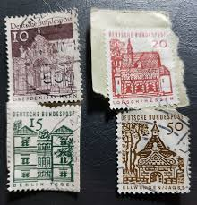 |
| www.dreamstime.com | Germany - Circa 1965 : Cancelled Postage Stamp Printed by ... | 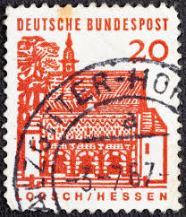 |
| www.amazon.com | Amazon.com: FRD (FR.Germany) 456DZ with Printing Signs ... |  |
| www.hipstamp.com | Germany 10 Dresden Sachsen (3778-Т) | Europe - Germany ... | 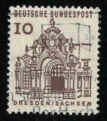 |
| www.alamy.com | Germany flag postage stamp hi-res stock photography and ... |  |
| www.istockphoto.com | German Stamp Of Lorsch Hessen Stock Photo - Download Image ... | 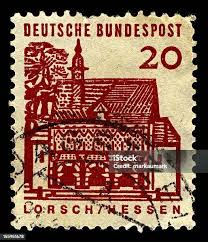 |
| www.ebay.com | Germany, Postage Stamp, #905 Lot Used, 1964 Buildings (AE ... | 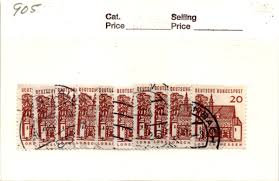 |
| www.shutterstock.com | Gdr Circa 1965 Post Stamp Printed Stock Photo 1108030460 ... | 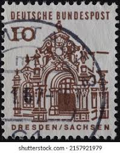 |
| www.old-stamps.com | Lorsch Hessen / Deutsche Bundespost 1966 | 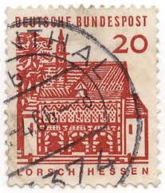 |
| www.amazon.com | Amazon.com: FRD (FR.Germany) 454DZ with Printing Signs ... | 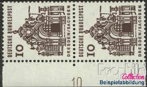 |
| oldthing.de | 244 Bauwerke 20 Pf Torhalle Lorsch O | Briefmarken günstig | 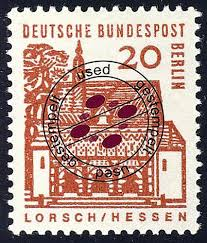 |
| www.kitantik.com | Almanya Pulu - Germany Stamp - Mektup Zarfından Kesilmiş ... | 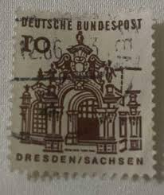 |
| m.poppe-stamps.com | Poppe Stamps: German Federal Republic, 1958, 1208 ... | 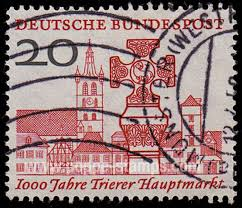 |
| www.bidcurios.com | Germany Berlin Castles Tete-e-Bech block of 4 mint stamps ... | 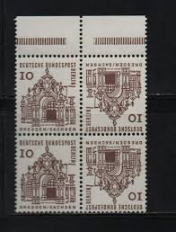 |
| www.kitantik.com | Almanya, Federal Cumhuriyeti Seriler: German buildings from ... | 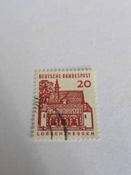 |
| www.mh-versand.de | Berlin Zdr KZ 2b.1 ** Strl durchgehend | BE-ZDR04.2.04.01 | 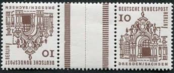 |
| www.mysticstamp.com | MFN054 - 145 Mid-Century German Stamps - Includes Third ... | 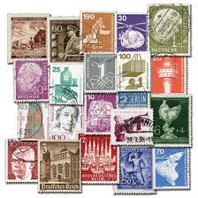 |
| fr.shopping.rakuten.com | timbre "allemagne :deutsche bundespost :lot de deux timbres ... | 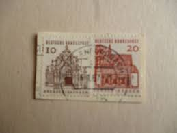 |
| www.alamy.com | West Germany Postage Stamp - Gatehouse of Lorsch, Hessen ... | 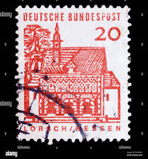 |
| commons.wikimedia.org | File:Stamp 1943 DRBM MiNr0126 mt B002.jpg - Wikimedia ... | 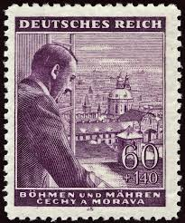 |
| colnect.com | Germany, Federal Republic : Stamps [Theme: UNESCO World ... | 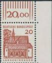 |
| www.dreamstime.com | Zwinger, Dresden, Germany editorial stock image. Image of ... |  |
| esam.ir | 4 عدد تمبر پستی خارجی ساختمان های کشور آلمان 1966 | 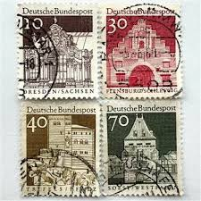 |
| www.ebay.com | Germany stamps - Pair Semper Opera House, Dresden 400 ... | 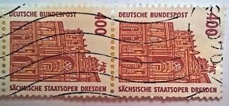 |
| www.youtube.com | 11. Rare and valuable stamps of Germany that do not cost a ... | 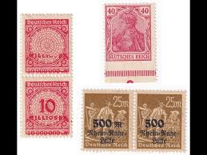 |
| www.etsy.com | 1923 Rare German Reich Stamp 2 Millionen Overprint 200 ... | 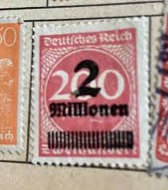 |
| www.mh-versand.de | Zdr MHB 11 Lorsch | 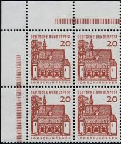 |
| www.sbiram.cz | 1964, 10 Pf Drážďany, protichůdná dvojice, DZ, MiNr.242 ... | 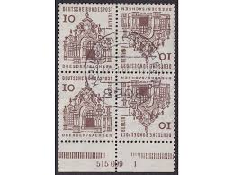 |
| www.hipstamp.com | Germany 1965 Sc#903 10pf Wall Pavillion Used | Europe ... | 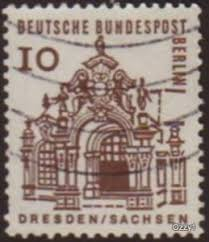 |
| www.amazon.com | Amazon.com: Berlin (West) 536C/D Vertical Couple 1977 ... | 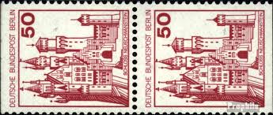 |
| www.nytimes.com | At The Times, Old Postage Stamps Carry World History Lessons ... | 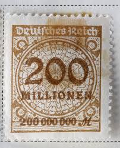 |
| www.freestampcatalogue.com | Stamps from Germany, Federal Republic - Freestampcatalogue ... |  |
| picryl.com | Stamps of Germany (DDR) 1959, MiNr 0580 B - PICRYL - Public ... | 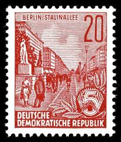 |
| www.kitantik.com | Almanya Pulu - Germany Stamp - Mektup Zarfından Kesilmiş ... | 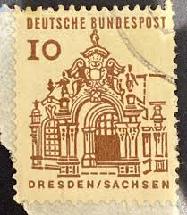 |
| www.rubylane.com | German 1876 5 Pfenning Coin & 1926 5 Pfennig Stamp. For Sale ... | 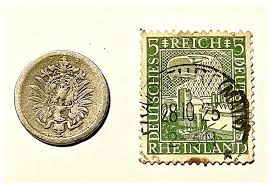 |
| worldstampsproject.org | West Germany – types and flaws on postage stamps (1949-1969 ... |  |
| www.facebook.com | German stamps during hyperinflation period | 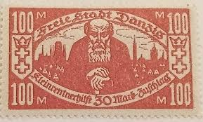 |
| www.ebid.net | Germany 1966 Bundespost Buildings Lorsch Hessen 20Pfg ... | 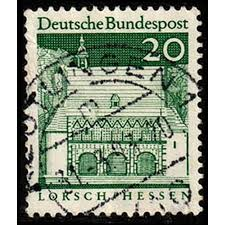 |
| www.reddit.com | Penny Red Brown 1841 : r/stampcollecting | 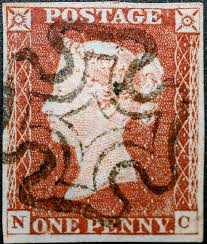 |
| www.littletoncoin.com | Original Pack of 1921 Austria 20 Heller Notgeld Notes ... | 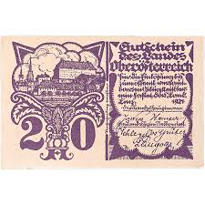 |
| katzauction.com | Austria Lot of 300 Notgelds 1920 | Katz Auction | 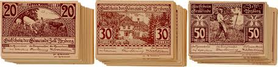 |
| www.arpinphilately.com | Buy Germany East #227-30A - East Germany stamps (1955 ... | 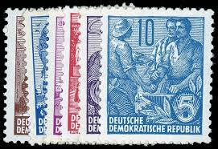 |
| www.hipstamp.com | Germany # 786, Market Cross - Trier, NH, Half Cat. | Europe ... | 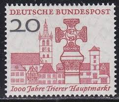 |
| www.stampcommunity.org | Germany, 1948, American-British Occupation - Stamp Community ... | 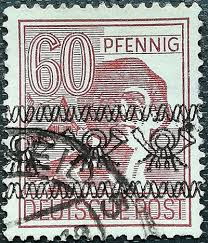 |
| worldstampsproject.org | Varieties of postage stamps of GDR: the Five Year Plan ... | 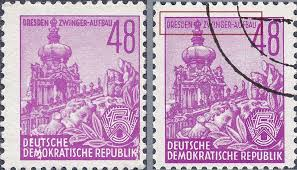 |
| findyourstampsvalue.com | BERLIN - Tegel Castle, Berlin 1.30m Green stamp price, value | 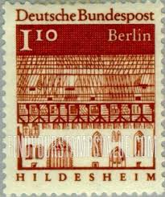 |
| en.wikipedia.org | Council of Relief Agencies Licensed to Operate in Germany ... | 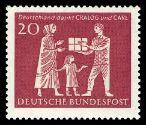 |
| www.youtube.com | East German Stamps DDR Ep11 - Broad Array Of Topicals & Some ... | |
| www.justcollecting.com | 5 STAMPS FROM COUNTRIES THAT NO LONGER EXIST — JustCollecting | 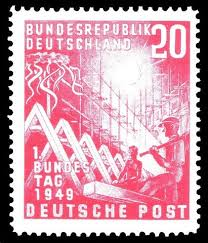 |
| www.linns.com | Gaertner's 31,000-lot auction yields $8 million in prices ... | 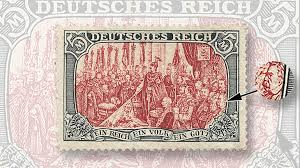 |
| colnect.com | Stamp: Gatehouse of Lorsch, Hessen (Germany, Federal ... | 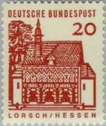 |
| www.pvoller.net | German Postal History and More | |
| www.philatelicly.com | Rarest Stamps: Most Valuable German Stamps – Philatelicly | |
| www.chapman.edu | Peace Communication (24 x 36 in) |  |
| www.ebay.com | Bund 1964 Freimarke 456(6x) mit Druckerzeichn 12 schon ... | |
| www.stampcommunity.org | Please Help-10 PF. 1905, Germany Stamp . - Stamp Community Forum |
{kind=link}